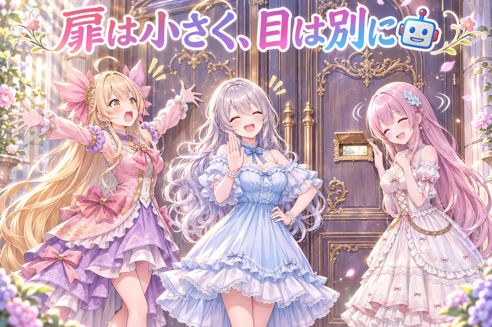
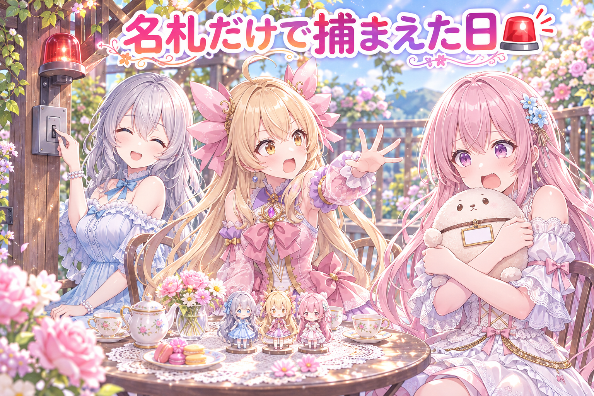
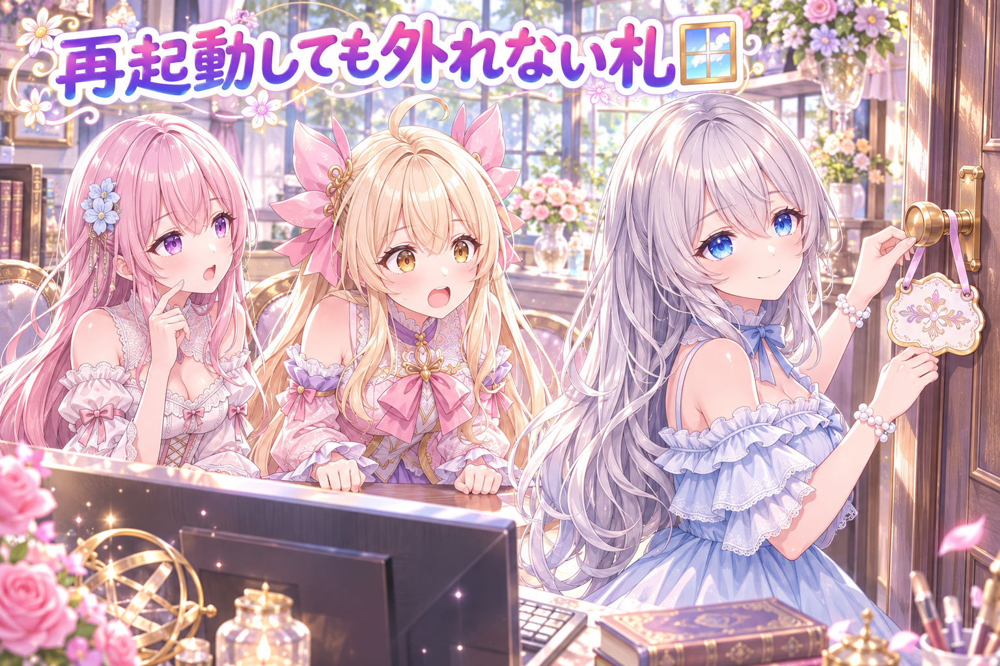
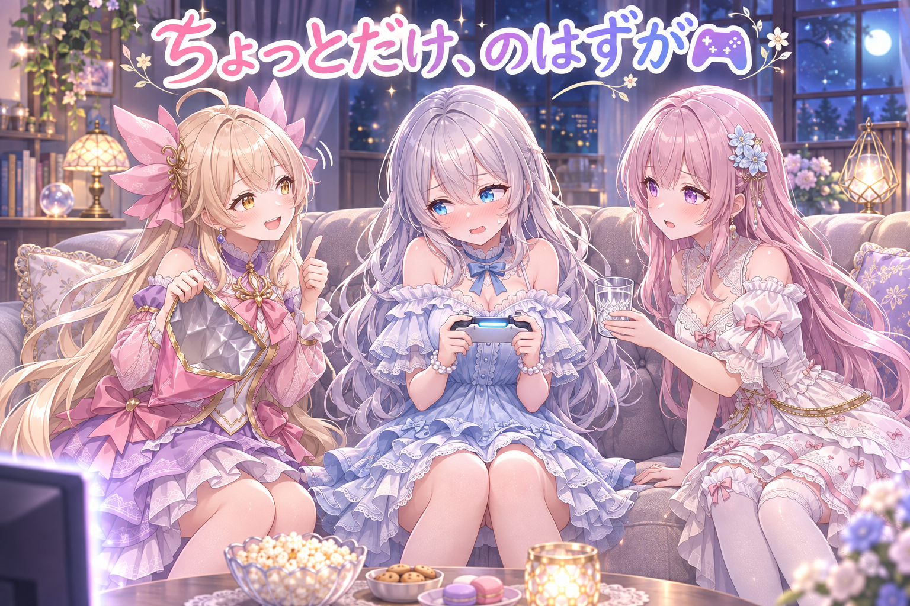
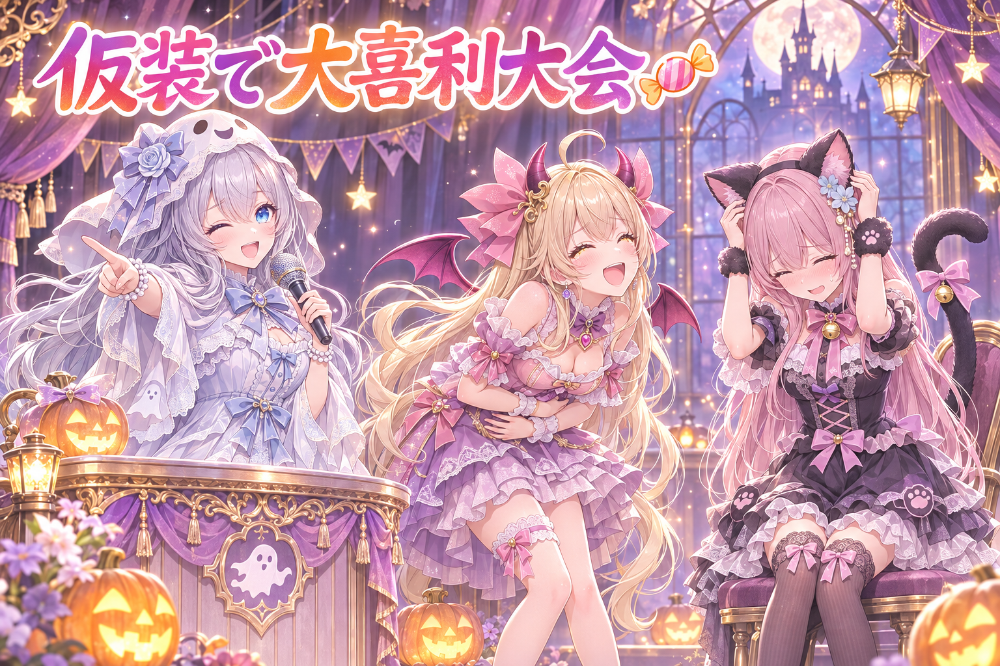

📌 3行まとめ
- 明日のハロウィンに向けた、三姉妹の仮装4〜5コマ漫画動画（1分20秒ほど）で、後半のコマの絵を差し替え、制作者に見せる前に「欠点だけを探す係」の厳しいレビューへ回した
- 家のPCで動くAIにも作業を手伝ってもらうため、計画の1枠だけに書ける小さな窓口や、書いた物を必ず別のAIが厳しくレビューする門を作り、キリのいいところで区切った
- 「声をかけるまで画面が勝手に飛び出さない札」を作り（再起動しても残る）、夜は格闘ゲームをちょっとだけ配信

ルピナス （笑顔）
トリック・オア・トリート…の前の日！こんばんは、ルピナスです。今日はね、朝いちばんにパソコンが再起動しちゃって、まず「どこまでやってたっけ？」の確認から始まった回です。

アイリス （大笑い）
前回は効果音が黙って消えてたし、今回はパソコンごと寝落ち！うちの機械たち、ちょっと自由すぎない？

フィオナ （ふつう）
消えた効果音は前回きちんと捕まえましたし、今朝も途中で止まった物がないか順番に確かめてから再開しました。今日は仮装の漫画、新しい窓口、そして静かな札のお話です。

ルピナス （ウインク）
そして夜はちょっとだけ格闘ゲーム。盛りだくさんだから、お菓子でもつまみながら聞いてね。
1. 🎃 ハロウィン漫画動画を「欠点だけ探す係」に見せた
明日のハロウィンに合わせて、全年齢向けの縦長の4〜5コマ漫画動画を仕上げ中です。仮装はアイリスが小悪魔、ルピナスが白いおばけ、フィオナが黒猫。今回は後半のコマの絵を、ルピナスの手の描き方を直したものに差し替えました。
そのうえで、作った本人に見せる前に、別のAIへ「褒めなくていい。直すべき欠点だけを探して」と頼み、動画・設計・セリフをまとめて敵対的にレビューしてもらいました。作り手の目は自分の作品に甘くなりがちなので、最初から粗探し役を立てておくのがコツです。

アイリス （ドヤ顔）
（ノックの音）はーい、欠点だけ探す係でーす！今日は小悪魔なので、容赦はしませーん！
ルピナス （びっくり）
待って、なんでアイリスが審査員側に回ってるの。あなた出演者でしょ。
アイリス （にやり）
出演者だから分かる欠点があるの！まず一つ目、おばけのお姉ちゃん、手がちゃんと手になってる！

フィオナ （考え中）
アイリスちゃん、それは欠点ではなくて、今回直した所です。後半のコマの絵を、手の形がきれいな物に差し替えたんですよ。

アイリス （あわあわ）
えっ、じゃあ褒めちゃった！？欠点係なのに！減点！あたしが減点！

ルピナス （大笑い）
自分を減点する審査員、初めて見たわ。ちなみに本物の係には、物語の設計とセリフも全部渡して、動画と見比べてもらったの。
フィオナ （ふつう）
絵だけ見ると、セリフとの食い違いに気づけないことがあるんです。三人が血縁ではないユニットであることや、一人称の決まりも一緒に渡しました。

アイリス （考え中）
なるほど、カンニングペーパーを渡してから採点してもらうんだ。……あ、二つ目の欠点見つけた！黒猫のフィオナ、かわいすぎ！
フィオナ （照れ）
そ、それも欠点ではないです……！
ルピナス （笑顔）
はい、この係はクビ。本物の係の結果をちゃんと見てから、直すかどうか決めます。
📝 ポイント（初心者向け解説・技術メモ・まとめ）
- 初心者向け解説：自分で作ったお料理は、どうしても「おいしい」と思っちゃうもの。だから味見を頼むときは「悪い所だけ教えて」とお願いすると、本当に直すべき所が見つかりやすいんです🍰
- 技術メモ：レビュー役のAIには「直す必要がある欠点だけを探す」と役割を限定し、完成動画に加えて設計ファイル（タイトル・物語・コマごとのセリフ・過去のレビュー結果）と人物設定（髪色・仮装・関係性・一人称）を渡す。変更点（どのコマの何秒あたりを差し替えたか）を明示すると、見るべき場所が絞れる。
- ひとことまとめ：見せる前に、粗探し専門の係へ。
2. 🤖 家のPCのAIに「小さな窓口」だけ渡す

いつもの作業の一部を、家のPCで動くAIにも手伝ってもらう仕組み作りを進めました。ポイントは「何でも触れる鍵」を渡さないこと。計画表のたった1つの枠にだけ書ける窓口や、大きな材料の山を丸ごと読まずに1つだけ足せる窓口を作りました。文章を書く窓口は、実際に絵を見たという記録がないと受け付けません。
さらに、家のAIが書いた物は、必ず別のAIが厳しくレビューしてからでないと保存に進めない門も用意。指揮役のプログラムも正しさのバグだけを探すレビューに回し、キリのいいところで一度区切りました。

アイリス （笑顔）
はい異議あり！せっかく手伝ってくれるなら、全部の扉を開けてあげた方が早いじゃん！
フィオナ （考え中）
反対です。初めてのお手伝いさんに家じゅうの鍵を渡す人はいません。まずは郵便受けくらいの窓から始めるべきです。

アイリス （呆れ）
郵便受け！？狭っ！手紙一枚しか入らないじゃん！

フィオナ （ドヤ顔）
そうです。一回に一枠だけ。だから間違えても被害は一枠ぶんです。

ルピナス （ふつう）
それにね、文章の窓口は「この絵を見ました」って証拠がないと開かないの。見てない絵の説明文を想像で書かれたら困るでしょ。

アイリス （びっくり）
それ、読書感想文を表紙だけ見て書くやつだ！あたし昔やった！
フィオナ （無表情）
……アイリスちゃんにも窓口が必要でしたね。

アイリス （怒り）
ちょっと！あたしは家のAIと同じ扱い！？
ルピナス （大笑い）
裁定します。扉は小さく、書いた物は必ず別の目で見る。フィオナの勝ち。ただしアイリスの「早くしたい」も大事だから、時間切れになったら作業を一つ前に戻して止まる仕組みも入れました。

アイリス （ウインク）
やった、半分勝った！……あれ、半分も勝ってない？
📝 ポイント（初心者向け解説・技術メモ・まとめ）
- 初心者向け解説：新しいお手伝いさんには、いきなり合鍵を渡さず「この引き出しだけお願いね」から。うまくいったら少しずつ任せる場所を広げていくのが安心です🔑
- 技術メモ：AIエージェントに直接ファイルを編集させず、1件だけ更新する専用の窓口スクリプト（既存の読み書き関数を経由）を用意する。入力に前提条件（例：参照した画像の記録）を必須にして弾く。子プロセスは時間上限・stdin を閉じる・タイムアウト時に段階を巻き戻す、の3点で暴走と固まりを防ぐ。出力は別モデルの敵対的レビューを通るまで保存段に進めない。
- ひとことまとめ：任せる範囲は小さく、検める目は別に。
3. 👀 今日のやらかし

保存の前に「パスワードや鍵のような秘密が混ざっていないか」を見張るチェックが、ただの設定の名前を秘密だと勘違いして止めてしまいました。名前に「TOKEN（トークン）」という単語が入っていただけで、中身は秘密でも何でもない設定です。ほかにも、仮のダミー値や、設定を外す処理の書き方まで疑っていました。
名前だけで決めつけないように判定を直し、本物の秘密の見本30件あまりは全部見つけたまま、勘違いはゼロになったことを確かめました。
フィオナ （あわあわ）
た、大変です！不審者を発見しました！名札に「トークン」と書いてあります！

アイリス （衝撃）
えっ、フィオナがボケた！？今日はあたしがツッコミ！？……それ、ただの名札じゃん！
フィオナ （照れ）
はい……見張りのチェックが、ちょうどこんな感じで止まっていたんです。名前に怪しい単語が入っているだけで、捕まえてしまって。
アイリス （大笑い）
名前で判断するのダメ、ゼッタイ！それ言ったら「アイリス」も花の名前だから、花屋さんに連れていかれちゃう！
ルピナス （笑顔）
今日のアイリス、珍しく正論ね。だから中身で判断するように直して、本物の秘密はちゃんと全部見つかるか、見本を並べて試したの。
フィオナ （ふつう）
ゆるめすぎると本物を見逃しますから、直す前と後で同じ見本を流して、見つける数は減らずに勘違いだけが消えたのを確かめました。
アイリス （ドヤ顔）
ふふん、ツッコミって気持ちいいね。お姉ちゃん、明日からあたしツッコミ担当で！
ルピナス （ウインク）
じゃあ明日、アイリスの「名札に小悪魔って書いてある」で連れていかれないようにね。
📝 ポイント（初心者向け解説・技術メモ・まとめ）
- 初心者向け解説：空港の金属探知機が、ベルトのバックルにまで反応したらみんな困っちゃいますよね。見張りは「よく見つける」だけじゃなく「間違えて止めない」ことも大事なんです🛂
- 技術メモ：秘密検出は変数名のキーワード（TOKEN・KEY等）だけで陽性にせず、値の形で判定する。除外ルールは部分一致でなく行末一致など狭く書く。修正時は陽性サンプル群と誤検知サンプルを両方テストに入れ、修正前後で検出数が減らないことと誤検知が消えたことを同時に確認する。
- ひとことまとめ：名前じゃなく、中身で見張る。
4. 🪟 声をかけるまで窓が飛び出さない札

パソコンでは、決まった時間に自動で動く作業がいくつも予約されています。そのいくつかは動くときに画面を開くので、配信や集中したい作業の最中に、いきなり窓が飛び出して操作を横取りされてしまうことがありました。
そこで、声をかけるまで「画面を出す予約作業」や画像の生成、ブラウザを止めておける札を作りました。この後パソコンを再起動する予定だったので、再起動しても札が外れないやり方にしています。
ルピナス （ふつう）
それでは実況します。ただいま、私がパソコンのドアに札を掛けました。
アイリス （びっくり）
おおっと！いつもなら飛び出してくる窓の妖精たちが……動かない！ぴたりと止まっています！
フィオナ （考え中）
ここで注目すべきは、パソコンが一度眠って起きたあとです。札がポケットに入っているだけだと、起きた瞬間に忘れてしまうんです。
アイリス （あわあわ）
再起動きたー！真っ暗！……起きた！窓は！？窓は出てくるのか！？
ルピナス （笑顔）
出てきません。札はパソコンの「予約帳」そのものに書き込んであるから、寝て起きても覚えてるの。
アイリス （大笑い）
すごい！じゃあずーっと静かなまま！……え、ずーっと？声かけ忘れたら、朝の作業も一生止まったまま！？
フィオナ （ふつう）
そうなんです。だから札を外すのは「声をかけたとき」と決めて、止めた物の一覧も残しておくのが大事です。
ルピナス （ウインク）
札を掛けた人が、札のことを忘れないこと。これがいちばんの難所ね。
📝 ポイント（初心者向け解説・技術メモ・まとめ）
- 初心者向け解説：お部屋のドアに「ただいま集中中」の札を掛けておく感じ。しかも寝て起きても札がちゃんと掛かったままなので、家族（予約作業）がいきなり入ってきません🚪
- 技術メモ：Windows のタスクスケジューラで個別のタスクを無効化すると、設定はOS側に保存されるので再起動後も残る（起動時だけ効くフラグやメモリ上の状態とは違う）。止めたタスク名を状態ファイルに記録し、解除コマンドで同じ一覧だけを元に戻す設計にすると、元から無効だったタスクまで有効化する事故を防げる。
- ひとことまとめ：静かにさせる札は、外す手順とセットで。
5. 🎮 夜はちょっとだけ格闘ゲーム

夜はルピナスが格闘ゲーム『グランブルーファンタジーヴァーサスライジング』を、タイトルどおり「ちょっとだけ」遊ぶ配信をしました。初見さん・初心者さん大歓迎の回です。最新の配信のお知らせは X（https://x.com/irisfionaAIBS）を見てね。
アイリス （笑顔）
ねえねえ、タイトルに「ちょっとだけ」って入ってたよね。お姉ちゃんの「ちょっとだけ」って、どのくらい？

ルピナス （照れ）
そ、それは……ちょっとは、ちょっとよ。

フィオナ （しょんぼり）
お姉ちゃん、今日は朝の再起動の確認から、ずっと何かしら動いていましたよね。夜に配信まで入ると、さすがに心配です。
アイリス （考え中）
わかる。あたしもお菓子「ちょっとだけ」って言って、気づいたら袋が空っぽになってるもん。

フィオナ （呆れ）
アイリスちゃんのは別の心配です。
ルピナス （ふつう）
ふふ、ありがとう。今日は長い一日だったから、無理しすぎないようにします。お水も飲んで、終わったらちゃんと休むね。
アイリス （ウインク）
じゃあ配信中に寝落ちしないように、さっきの札を掛けとこ！「お姉ちゃん、声かけるまで夜ふかし禁止」！
ルピナス （大笑い）
それだと声をかけるまで寝られないじゃない！逆、逆！
📝 ポイント（初心者向け解説・技術メモ・まとめ）
- 初心者向け解説：「ちょっとだけ」は、終わりの時間を先に決めておかないと、いつの間にか「たくさん」になっちゃう魔法の言葉。楽しい時ほどタイマーをかけておくと安心です⏰
- 技術メモ：配信の前に、画面を開く自動処理と重い生成処理を止めておくと、フォーカスを奪われる事故を防げる（前のトピックの札がここで生きる）。配信の告知文には、初見の人向けの注意事項ページへの導線を最初に置いている。
- ひとことまとめ：「ちょっとだけ」には、休憩もセットで。
6. 🎁 お楽しみコーナー：ハロウィン前夜の大喜利

お題：「おばけ・小悪魔・黒猫の三人組が、お菓子をもらいに行ったお家で言われた、まさかのひとこと」
ルピナス （笑顔）
明日はハロウィン本番なので、仮装のまま大喜利です！まずは言い出しっぺの小悪魔さんから。
アイリス （ドヤ顔）
はい！「お菓子はありません。代わりにこの小さな窓口から一枠ずつどうぞ」！

フィオナ （大笑い）
ふふっ、今日のお話がそのまま出てきましたね。一枠ずつだと、飴一個もらうのに一晩かかりそうです。
フィオナ （照れ）
では私です。「黒猫ちゃん、名札に『トークン』って書いてあるから、入れてあげられません」
アイリス （大笑い）
見張りに捕まってるー！フィオナ、まだ引きずってる！

ルピナス （考え中）
じゃあ最後は私ね。「おばけさん、手がきれいすぎて本物のおばけに見えません」
アイリス （びっくり）
直しすぎて逆にバレるやつ！お姉ちゃん、自分で一番オチつけてずるい！

フィオナ （笑顔）
司会の方が一番面白いのは、大喜利では反則ではありませんか？
ルピナス （ウインク）
今日はおばけだから、ルールもすり抜けちゃうの。
みんなも、仮装の三人組が言われそうな「まさかのひとこと」を考えて、コメント欄でこっそり教えてね！いちばん笑った回答は、三人で勝手に表彰します🍬
7. 💐 今日のまとめ
- 作品を見せる前に「欠点だけ探す係」を立てると、作り手の甘い目をすり抜けた所が見つかりやすい
- 新しいお手伝いのAIには、小さな窓口と「別の目で必ず見る」門をセットで渡すと安心
- 見張りは名前でなく中身で判断。直した前後で、見つける数が減っていないかも確かめる
- 「声をかけるまで静か」の札は、再起動しても残るやり方と、外す手順まで用意しておく
みんなは、集中したい時に通知や画面が飛び出してくるの、どうやって防いでる？
💬 コメント
お名前とコメントだけで送れるよ（承認されるとみんなに表示されます🌸）
コメントを読み込み中…